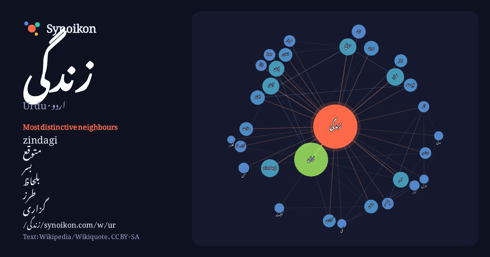

اردو · Urdu · popular word
زندگی
“life” · The words found around it in 1117 instances from Urdu Wikipedia, Wikiquote.

Most distinctive neighbours
- zindagi 31×
- متوقع 25×
- بسر 20×
- بلحاظ 15×
- طرز 15×
- گزاری 15×
- life 13×
- روزمرہ 13×
- گزارنے 12×
- میری 11×
- عملی 10×
- پوری 9.6×
- آلہ 9.5×
- اپنی 9.3×
- معیار 9.3×
- گزار 8.7×
- حالات 8.6×
- بہتر 8.1×
- مکی 8.1×
- ذاتی 8.1×
× = how many times more often than in general Urdu Wikipedia text.
Most frequent neighbours
- میں 329
- کا 212
- سے 165
- کو 121
- اس 112
- اپنی 111
- نے 94
- ان 64
- جو 59
- وہ 55
- لیے 54
- کیا 51
- یا 48
- بھی 44
- کر 41
- نہیں 35
- zindagi 31
- طرز 30
- آغاز 28
- جس 28
In context
- زندگی کیا ہے؟ مختلف شعبہ ہائے زندگی سے تعلق رکھنے والے افراد، حیات کی مختلف انداز میں تعریف کرتے ہیں جو اس مضمون میں مختصرا درج تو کی جائیں گی مگر اصل Wikipedia snippets · حیات
- یہ فہرست امریکی ریاستیں بلحاظ متوقع زندگی (List of U.S. states by life expectancy) ہے۔ فہرست ممالک بلحاظ متوقع زندگی Wikipedia snippets · فہرست امریکی ریاستیں بلحاظ متوقع زندگی
- ہیں اور انھوں نے اپنی پوری زندگی اس ٹرسٹ کے لیے وقف کر دی ہے۔ شہزاد رائے اپنی موسیقی کے مدد سے عطیات جمع کرتے ہیں۔ زندگی ٹرسٹ کے ارکان صرف بچوں کے ساتھ Wikipedia snippets · زندگی ٹرسٹ
- ویکیپیڈیا بیرونی روابط پر موجود معلومات و نظریات کی ذمہ دار نہیں ہے۔ صنعتی انقلاب اور معیار زندگی پر کلارک نارڈینیلی صفحہ جال معیار زندگی پر عالمی درجات Wikipedia snippets · معیار زندگی
- زندگی کی صلاحیتیں ایک اصطلاح ہے جس کا اطلاق ماحول کے مطابق خود دھالنے اور مثبت رویہ اپنانے پر ہوتا ہے جو انسانوں کو زندگی کے مطالبات اور مشکل صورت حال Wikipedia snippets · زندگی کی صلاحیتیں
- "مدت زندگی متوقع" دکھایا گیا ہے۔ یہ ان سالوں کی اوسط تعداد ہے جو ایک نوزائیدہ زندہ رہے گا اگر موجودہ سال میں عمر کے لحاظ سے شرح اموات اس کی زندگی بھر یکساں Wikipedia snippets · فہرست ممالک بلحاظ متوقع زندگی
- اس سے آگے کی کہانی زندگی کے ان تانے بانوں پر چلتی ہے جس میں ایک جانب زارون کی محبت ہے اور دوسری جانب صنم کا احساس کمتری ہے- ”زندگی گلزار ہے “ ہر جمعہ Wikipedia snippets · زندگی گلزار ہے
- جولائی 2016 {{حوالہ ویب}}: نامعلوم پیرامیٹر |dead-url= رد کیا گیا (معاونت) زندگی کتنی حسین ہے فیس بک پر زندگی کتنی حسین ہے آئی ایم ڈی بی پر (بزبان انگریزی) Wikipedia snippets · زندگی کتنی حسین ہے
More Urdu words
Precomputed on 2026-10-09 with default settings (±5 words, medium corpus). The interactive map can refresh it with live data.